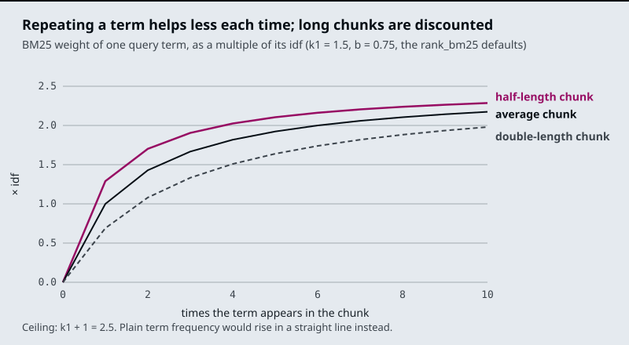
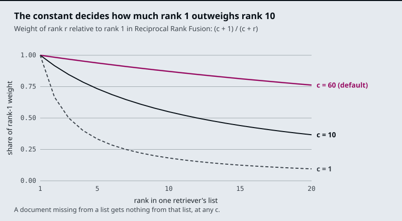

The running example is the Larkspur Cloud handbook from M10 to M12, now searched with two kinds of question. Some are worded unlike the handbook, such as What happens if my server goes down?, whose evidence talks about “outage” and “availability”; the dense retriever is built for these. Others hang on an exact string, such as an order ID like ORD-88213, which the M10 symptom table already sends to this module; BM25 is built for these. The lab’s golden set mixes both kinds: paraphrase questions, and questions that name an error code such as E-4021.
TL;DR
- Dense retrieval compares embedding vectors and matches paraphrase; sparse retrieval (BM25) scores shared tokens and matches exact terms. Each misses what the other finds, so production retrieval usually runs both.
- BM25 is TF-IDF with two corrections: repeated terms saturate (
k1, 1.5 by default inrank_bm25) and long chunks are discounted (b, 0.75). LangChain’sBM25Retrieversplits on whitespace only, soapplication.andapplicationare different tokens. - Fusing two rankings by weighted min-max scores (
03a,alpha = 0.5) depends on each retriever’s score scale. Reciprocal Rank Fusion uses ranks only:EnsembleRetrieveraddsweight / (60 + rank)per list. With equal weights of 1, a chunk ranked 3rd by both retrievers (2/63 = 0.0317) beats one ranked 1st by only one (1/61 = 0.0164). - MMR picks the most similar chunk first, then trades relevance against redundancy with
lambda_mult(0.5 by default) overfetch_kcandidates (20 by default). - Filters on metadata, score, keywords and diversity shrink the context after retrieval. Score thresholds belong to one embedding model; re-tune them when the model changes.
Mental model
- A question arrives with ordinary words and an exact string, such as an order ID.
- BM25 ranks the chunks that share the question’s exact tokens. The chunk holding the ID comes first.
- The embedding retriever ranks chunks by meaning, so a chunk worded differently from the question can come first.
- Fusion merges the two lists into one, by rank (RRF) or by normalised score. Both first places can now sit near the top.
- Metadata and score filters drop chunks that cannot be right, such as a superseded policy.
- MMR replaces near-copies of a chunk already chosen with chunks that add something new.
- The top k chunks go to the model, or to a reranker first (M18).
Two retrievers rank the same chunks by different evidence, and fusion turns two ranked lists into one. Fusion only reorders what the two retrievers returned: a chunk that neither puts in its top k is gone before the merge, so give each retriever a wider k than the final one.
Search modes
Lesson 16.1: The retriever interface and its search modes. Notebooks: 01a_retrievers.ipynb
What you’ll learn
- Explain why every retriever, however elaborate, looks the same to the chain that calls it.
- Compare the six search modes by what they return and what they cost per question.
- Diagnose a score threshold that reads a distance as a relevance score.
- Choose a first defence for questions the index cannot answer.
Part IV ended with a working pipeline: load, chunk, embed, store, retrieve the top k. This module changes only the retrieve step, so it starts with what a retriever is.
A Larkspur customer asks Can I rent a GPU server for model training? Larkspur does not sell GPU servers, and the handbook says nothing about them. Plain similarity search returns three chunks anyway, the three plan sheets, and the model is asked to answer from them.
A retriever is any object that takes a query string and returns a list of documents. In LangChain that is one method, invoke(query). The signature is the whole contract, which is why retrievers stack: a wrapper that calls another retriever and post-processes its list is itself a retriever.
Here is how three wrappers sit around one vector store:
flowchart LR
Q[/Question/] --> E["Ensemble<br/>merge two lists"]
E --> C["Compression<br/>trim each chunk"]
E --> B["BM25<br/>keyword index"]
C --> V["Vector store<br/>as_retriever"]
Figure 1: Retrievers nest. The chain calls the outer one and sees the same interface at every depth.
A vector store becomes a retriever through as_retriever, with a search type and its settings. Notebook 01a builds a twelve-sentence Chroma store and tries each mode on questions such as what is the old capital of India?:
| Mode | What it returns | Extra cost per question |
|---|---|---|
Similarity (k = 3) |
The 3 nearest chunks, however far away they are | None |
MMR (k = 3 from fetch_k = 10) |
3 of the 10 nearest, chosen to differ from each other (lesson 16.4) | None |
Score threshold (k = 3, threshold 0.3) |
Up to 3 chunks with relevance at least 0.3; possibly none | None |
| Multi-query | The union of results for several LLM-written rewordings | 1 LLM call, then one search per rewording |
| Contextual compression | The same chunks cut to their relevant sentences, or only the chunks an LLM keeps | 1 LLM call per retrieved chunk |
| Ensemble (weights 0.7 and 0.3) | One list merged from several retrievers by weighted rank fusion (lesson 16.3) | One more search per retriever, no LLM call |
Table 1: The six modes in 01a.
The first row is the one that failed the GPU question. Similarity search has no notion of “nothing relevant”: it sorts every chunk by distance and hands over the first k. We call this forced top-k. The model receives the closest chunks whether they are close or not, and a fluent answer built from the plan sheets reads like a yes.
Here are the real cosine scores for that question and for an in-scope one, embedded with all-MiniLM-L6-v2 over the 19 Larkspur chunks of this module’s lab:
| Question | 1st chunk | 2nd chunk | 3rd chunk |
|---|---|---|---|
| How long does a refund take? | refund-timing 0.770 |
refund-window 0.608 |
support 0.297 |
| Can I rent a GPU server for model training? | plan-816 0.206 |
plan-204 0.200 |
plan-408 0.183 |
Table 2: Relevance scores, in-scope against out-of-scope (cosine similarity, all-MiniLM-L6-v2).
Similarity search sends all six chunks. A floor of 0.3 sends the two refund chunks for the first question and nothing for the second, which is the right answer: the index holds nothing to say about GPUs.
Distance or relevance: two score directions
A score threshold is the first defence against forced top-k, and it goes wrong in a predictable way, because vector stores report scores in two directions:
- Distance: lower is closer.
similarity_search_with_scorereturns it.01asets Chroma’s space to cosine, because Chroma uses Euclidean distance unless told otherwise. - Relevance score: higher is closer.
similarity_search_with_relevance_scoresreturns it, and the score-threshold mode is built on it. For cosine space, Chroma computes it as 1 minus the distance.
One chunk from 01a, traced through both:
| Reported as | Value | Passes “at least 0.3”? |
|---|---|---|
| Cosine distance | 0.35375 | Read as relevance, it would barely pass |
| Relevance (1 minus distance) | 0.64625 | Yes, comfortably |
Table 3: The same chunk, two scores.
Comparing a distance with a threshold written for relevance inverts the filter: the closest chunks have the smallest distances and are the first to be cut. We call this the flipped threshold. Print a known-good pair and a known-bad pair before trusting any threshold.
01a also builds a custom retriever that does the conversion itself, keeps chunks above a threshold (0.51 for what is the financial capital of India?), and writes the rounded score into each chunk’s metadata. That habit pays off later: a logged score can be plotted, and a threshold can then be tuned from real distributions rather than copied.
Pitfall: a portable threshold. A threshold belongs to one embedding model and one distance function on one corpus. Table 2’s 0.3 works for
all-MiniLM-L6-v2here; another model spreads the same questions over a different range. Re-tune it whenever the model changes.
What each wrapper spends
Table 1’s cost column decides which wrappers a team can afford per question. Each one fixes a different failure:
- Multi-query: wording that misses the documents. Spends one LLM call and several searches to raise recall.
- Compression: chunks full of text the question does not need. Spends one LLM call per chunk to cut tokens and noise.
- Ensemble: a single retriever’s blind spot. Spends one search per extra retriever and no LLM call.
01a’s ensemble merges a compressed retriever with a plain one over the same store. Ensembles are not only for dense plus keyword search: any two retrievers with different blind spots can be fused. Lesson 16.6 compares the patterns side by side and counts the calls when they nest.
In practice: an out-of-scope guard for Larkspur
For Larkspur’s support assistant, the retriever needs a way to return nothing:
- Log scores first. Write each chunk’s relevance into its metadata, and record it for every query for a week.
- Set the floor from data. Take in-scope golden questions and out-of-scope ones such as the GPU question, and place the threshold between their score ranges (0.3 separates Table 2’s two questions).
- Treat empty as an answer. An empty list routes to a fixed reply (“The handbook doesn’t cover that”) instead of a model call.
- Re-tune on model change. A new embedding model means a new floor.
The guard handles questions the handbook cannot answer. Lesson 16.2 turns to questions it can answer but the embedding retriever still misses.
Key Takeaways
- Every retriever exposes
invoke(query)and returns documents, so multi-query, compression and ensemble wrappers stack without the chain noticing. - Similarity search always returns
kchunks (forced top-k): the GPU question gets three plan sheets at 0.18 to 0.21. A score threshold lets the retriever return nothing. - Check whether a store reports a distance (lower is closer) or a relevance score (higher is closer), and tune any threshold per embedding model from logged scores.
Check yourself
1. Why can a chain not tell a plain vector search from a hybrid, compressed, multi-query retriever?
Every retriever has one signature: it takes a query string and returns a list of documents. A wrapper that calls another retriever and post-processes its list is itself a retriever, so the chain sees the same interface at every depth.
2. Chroma in cosine space reports a distance of 0.35375 for a chunk. What does the score-threshold mode compare, and does the chunk pass a threshold of 0.3?
It compares a relevance score, where higher is closer. For cosine, Chroma computes 1 minus the distance, so 0.35375 becomes 0.64625 and the chunk passes comfortably. Comparing the raw distance against a relevance threshold is the flipped threshold: it cuts the closest chunks first.
3. The GPU question gets three plan sheets scoring 0.18 to 0.21, while the refund question's evidence scores 0.61 to 0.77. What do you change, and what must the assistant do when nothing passes?
Add a score threshold set between the two ranges, such as 0.3 for this model and corpus, so the out-of-scope question retrieves nothing. An empty result is a valid outcome: route it to a fixed “not covered” reply instead of asking the model to answer from unrelated chunks.
Dense vs sparse
Lesson 16.2: Dense + sparse hybrid retrieval with BM25 and EnsembleRetriever. Notebooks: 02a_dense_sparse_hybrid_retrieval.ipynb, 02b_hybrid_search_rag.ipynb (optional)
What you’ll learn
- Explain why an embedding retriever misses an error code that a keyword retriever finds, and the reverse.
- Compare dense and sparse retrieval on the Larkspur golden questions, rank by rank.
- Explain the two corrections BM25 makes to TF-IDF.
- Diagnose a keyword retriever that misses because of its tokeniser, before touching its parameters.
Lesson 16.1 treated the retriever as a black box with one method. This lesson opens two different boxes and shows that each one fails on the questions the other gets right.
A Larkspur customer pastes What does E-4021 mean? The handbook has a chunk that starts “Error E-4021: the export stopped at the 50 GB snapshot limit.” The embedding retriever ranks it 5th, behind four other error-code chunks that look alike to it, and a top-3 cut drops the one chunk that answers.
A dense retriever turns every chunk and the question into an embedding, a vector in which every position holds a number, and ranks chunks by vector similarity. A sparse retriever describes a chunk by its words: one weight per vocabulary word, zero for almost all of them. The two match on different evidence:
| Dense (embeddings) | Sparse (BM25) | |
|---|---|---|
| A chunk is | A vector; 1,536 numbers for text-embedding-3-small in 02a |
Token counts over the vocabulary, mostly zero |
| Matches | Meaning: paraphrase, synonyms | Exact tokens |
| Misses | Rare exact strings: order IDs, plan names, error codes | Different words for the same thing |
| Needs | An embedding model at index and query time | A tokeniser; no model |
Table 1: Dense and sparse retrieval side by side.
An error code has no learned meaning for an embedding model, so its few characters move the chunk’s vector very little. BM25 treats e-4021 as one more token and a rare one, which is the case it weights most.
The module’s lab ranks the same 19 Larkspur chunks both ways, with BM25 and with all-MiniLM-L6-v2 cosine similarity. Here is where each retriever puts the evidence for its seven golden questions:
| Golden question | Evidence chunk | BM25 rank | Dense rank |
|---|---|---|---|
| How long does a refund take? | refund-window / refund-timing |
1 / 3 | 2 / 1 |
| What happens if my server goes down? | sla / incidents |
3 / none | 2 / 1 |
| Where do I find out what caused the downtime? | incidents |
9 | 1 |
| What does E-4021 mean? | err-4021 |
2 | 5 |
| E-4102 for the third time. Can I take my files with me another way? | err-4102 / export |
1 / 4 | 1 / 4 |
| E-4021 for the third time. Can I take my files with me another way? | err-4021 / export |
1 / 4 | 2 / 5 |
| E-5013 for the third time. Will my machines get shut off? | err-5013 / suspension |
1 / 5 | 4 / 3 |
Table 2: Rank of each evidence chunk (computed with the lab’s BM25 and all-MiniLM-L6-v2). “None” means BM25 gave the chunk a score of 0.
The pattern is the one Table 1 predicts. The downtime questions share no word with the incidents chunk (“root-cause report”, “recovery”), so BM25 ranks it 9th or not at all, while the dense retriever puts it first. The code questions flip it: BM25 finds the code chunk at rank 1 or 2, and the dense retriever finds the look-alike codes first.
Key distinction: neither retriever is the better one. Each fails on a question type the other handles, so the golden set has to contain both types, or a switch from one to the other looks like a pure win.
02a combines the two with EnsembleRetriever:
flowchart LR
Q[/Question/] --> D["FAISS retriever<br/>k = 4, the default"]
Q --> S["BM25Retriever<br/>k = 3"]
D --> E["EnsembleRetriever<br/>weights 0.7 / 0.3"]
S --> E
E --> R["create_retrieval_chain<br/>stuff into the prompt"]
Figure 1: The hybrid chain in 02a. Both retrievers see the same question; the ensemble merges their lists.
The weights follow the order of the retrievers list: 02a gives 0.7 to dense and 0.3 to BM25, and 02b lists BM25 first with 0.5 each. The ensemble hands its merged list to a chain that stuffs every returned chunk into the prompt. Lesson 16.3 shows how the merge works and how those weights can bury a keyword hit.
BM25
BM25 scores a chunk by summing one term for every query word the chunk contains. Each term multiplies how rare the word is by how often it appears in the chunk, with two corrections that plain TF-IDF lacks:
| Piece | Meaning | Default in rank_bm25 |
|---|---|---|
| idf | How rare the word is across all chunks; log((N - n + 0.5) / (n + 0.5)) for a word in n of N chunks |
Negative values (words in over half the chunks) get a small floor |
| tf | How often the word occurs in this chunk | |
k1 |
Saturation: each extra occurrence adds less, up to a ceiling of k1 + 1 times the idf |
1.5 |
b |
Length normalisation: chunks longer than average are scaled down, shorter ones up | 0.75 |
Table 3: The pieces of a BM25 term. The term-frequency part is tf × (k1 + 1) / (tf + k1 × (1 - b + b × length / average length)).
In plain TF-IDF a word that appears ten times counts ten times as much as one that appears once. A chunk that repeats “refund” ten times is not ten times as relevant, so BM25 bends the curve. Here is that curve for chunks of three lengths:

Figure 2: Term-frequency weight against occurrences, with k1 = 1.5 and b = 0.75.
Reading four points off the curve, as multiples of the word’s idf:
| Occurrences | Chunk length | Weight |
|---|---|---|
| 1 | Average | 1.00 |
| 2 | Average | 1.43 |
| 10 | Average | 2.17 |
| 1 | Twice the average | 0.69 |
Table 4: Saturation and length normalisation in numbers.
The second occurrence adds 0.43, the next eight add 0.74 between them, and the ceiling is 2.5. Length normalisation exists because a long chunk contains more words by chance.
Fix the tokeniser first
BM25 can only match tokens the tokeniser produces. LangChain’s BM25Retriever uses BM25Okapi from rank_bm25 and, by default, splits on whitespace: no lower-casing, punctuation kept on the word.
02a indexes five sentences and asks How can I build an application using LLMs? Here is what the default tokeniser lets match (scores computed with rank_bm25 on that corpus):
| Sentence | Tokens matched | BM25 score |
|---|---|---|
| LangChain helps build LLM applications. | build |
1.261 |
| Langchain can be used to develop agentic ai application. | can |
0.973 |
| The other three | none | 0 |
Table 5: What whitespace splitting matches.
The question’s application does not match application. with its full stop, and LLMs? does not match LLM. Case splits words too: LangChain (one sentence) and Langchain (two sentences) are separate tokens with idf 1.10 and 0.34. The retriever still returns k = 3 sentences, so its third result scored 0 and was picked by tie order. We call this token mismatch: the evidence holds the word, and the index holds a different string.
The fix is a tokeniser that lower-cases, strips punctuation and keeps hyphenated identifiers in one piece, passed to the retriever as its preprocessing function. On the same corpus it lifts the second sentence to 1.947, because application now matches. A code typed at the end of a question (ORD-88213?) becomes ord-88213 and matches the chunk that contains it. The lab’s BM25 in Table 2 uses this tokeniser.
Pitfall: tuning around a token mismatch.
LLMsstill missesLLMafter the fix; matching word forms needs a stemmer. Tunek1andbonly after the tokens are right, because the tokens decide what can match at all.
In practice: Larkspur’s hybrid retriever
For Larkspur’s support search, Table 2 says which questions need which half:
- Keep the dense half for questions worded unlike the handbook: downtime, “money back”, “shut off”.
- Add BM25 for questions that quote an error code, a plan name (
LC-408) or an order ID. - Tokenise for codes: lower-case, strip punctuation, keep
e-4021andlc-408whole. Check it on a pasted code with a trailing question mark. - Put both question types in the golden set, so a change that helps one type and hurts the other shows up.
Running two retrievers gives two ranked lists for every question. Lesson 16.3 turns them into one.
Key Takeaways
- Dense retrieval matches meaning and misses rare exact strings; BM25 matches exact tokens and misses paraphrase. On the Larkspur set, dense ranks
err-40215th and BM25 ranksincidents9th. - BM25 is TF-IDF with saturation (
k1, each extra occurrence adds less) and length normalisation (b, long chunks scaled down). - Fix the tokeniser before tuning
k1andb. Whitespace splitting keeps case and punctuation, soapplication.never matchesapplication(token mismatch).
Check yourself
1. Why does BM25 find the chunk for E-4021 at rank 2 when the dense retriever puts it 5th?
An error code has no learned meaning for an embedding model, so its characters move the chunk’s vector very little and four look-alike error chunks rank above it. BM25 treats e-4021 as a rare token with a high idf, the case it weights most.
2. With the rank_bm25 defaults, what is a word worth at one, two and ten occurrences in an average-length chunk, and at one occurrence in a chunk twice that length?
1.00, 1.43 and 2.17 times its idf, and 0.69 in the double-length chunk. Each extra occurrence adds less, up to a ceiling of k1 + 1 (2.5) times the idf, and b scales term frequency down for chunks longer than average.
3. The default BM25 retriever matches only build and can in "How can I build an application using LLMs?" What is wrong, and what do you fix first?
Token mismatch: the default tokeniser splits on whitespace, so application misses application. and LLMs? misses LLM. Fix the tokeniser first (lower-case, strip punctuation, keep hyphenated IDs together), which lifts the second sentence to 1.947. Tune k1 and b only after that.
Two lists, one answer
Lesson 16.3: Fusion retrieval: score normalisation vs rank fusion. Notebooks: 03a_fusion_retrieval.ipynb
What you’ll learn
- Explain how weighted score fusion and Reciprocal Rank Fusion each turn two ranked lists into one.
- Diagnose four fusion failures: the min-max mirage, the position join, the buried keyword hit and the shallow hand-over.
- Compute an RRF score by hand and predict which chunk wins.
- Choose a fusion method, and know which knob to turn first.
Lesson 16.2 ran BM25 and an embedding retriever side by side and found that each misses what the other finds. This lesson merges their two lists into the one list the model sees.
A Larkspur customer writes E-4102 for the third time. Can I take my files with me another way? Two chunks answer it: err-4102 (the export link expired) and export (where else to export from). BM25 ranks them 1st and 4th; the dense retriever also ranks them 1st and 4th, with different chunks in between. Either retriever alone sends one of the two in its top 3.
Fusion fixes that question. Here is the lab’s recall@3 for all seven golden questions, fusing by weighted scores with alpha as the dense share:
| Golden question | BM25 only (alpha 0) |
Fused (alpha 0.5) |
Dense only (alpha 1) |
|---|---|---|---|
| How long does a refund take? | 1.00 | 1.00 | 1.00 |
| What happens if my server goes down? | 0.50 | 0.50 | 1.00 |
| Where do I find out what caused the downtime? | 0.00 | 1.00 | 1.00 |
| What does E-4021 mean? | 1.00 | 1.00 | 0.00 |
| E-4102 … take my files with me another way? | 0.50 | 1.00 | 0.50 |
| E-4021 … take my files with me another way? | 0.50 | 1.00 | 0.50 |
| E-5013 … will my machines get shut off? | 0.50 | 1.00 | 0.50 |
| Mean | 0.57 | 0.93 | 0.64 |
Table 1: Recall@3 by alpha (the module’s hybrid fusion lab, 19 Larkspur chunks, BM25 and all-MiniLM-L6-v2).
The blend wins five rows and loses one: What happens if my server goes down? keeps only half its evidence at 0.5, because BM25’s top scorer is export, which shares only the word “server” (from “server snapshots”), and min-max turns that weak match into a full 1.0 on the BM25 side. The fused top 3 is export, sla, suspension, and incidents drops out. A fusion method is a bet on which retriever to believe when they disagree, and the two methods below make that bet differently.
Weighted score fusion
Weighted score fusion puts both retrievers’ scores on one scale and adds them. Notebook 03a does it this way:
flowchart LR
Q[/Question/] --> V["FAISS<br/>distance per chunk"]
Q --> B["BM25Okapi<br/>score per chunk"]
V --> NV["Min-max,<br/>then 1 - x"]
B --> NB["Min-max"]
NV --> C["alpha * vector<br/>+ (1 - alpha) * BM25"]
NB --> C
C --> K[/Top k = 5/]
Figure 1: Weighted score fusion in 03a.
The scales differ: BM25 scores are unbounded sums of idf weights, and FAISS returns L2 distances where lower is better. 03a splits a climate-change PDF into 1,000-character chunks with 200 of overlap, scores every chunk both ways, min-max normalises each list (subtract the minimum, divide by the range, so the values run from 0 to 1), flips the distances so higher means closer, and ranks by the weighted sum with alpha = 0.5 and k = 5. alpha = 1 is pure dense retrieval; alpha = 0 is pure BM25.
Min-max is relative to the current query’s results. The best chunk always scores 1.0 and the worst 0.0, even when no chunk is relevant. We call this the min-max mirage: a question the corpus cannot answer still produces a confident-looking top score. One outlier also squashes everything else. If one chunk contains a rare code and scores far above the rest in BM25, every other chunk’s BM25 share shrinks toward 0 and the dense half decides their order. The same alpha therefore weighs the two retrievers differently from one question to the next.
In return, score fusion keeps information that ranks throw away: how far ahead the top hit is.
Pitfall: the position join. As written,
03atakes its document list in one order (distance to an empty query), its vector scores in a second (distance to the question) and its BM25 scores in a third (corpus order), then adds them index by index. Each combined score mixes three different chunks. Join scores by chunk id, read out in one fixed order, never by list position.
Keying on the chunk’s text assumes no two chunks are identical, which is also what EnsembleRetriever assumes unless you give it an id field.
Reciprocal Rank Fusion
Reciprocal Rank Fusion (RRF) ignores scores and uses each chunk’s position in each list. A chunk earns w / (c + rank) from every list it appears in, and the sums decide the order:
| Symbol | Meaning | In EnsembleRetriever |
|---|---|---|
| rank | The chunk’s position in one retriever’s list, starting at 1 | A chunk missing from a list earns nothing from it |
c |
A constant that flattens the rank curve | 60, from Cormack, Clarke and Büttcher (SIGIR 2009) |
w |
The list’s weight | Equal if you pass none |
Table 2: The terms of an RRF score.
EnsembleRetriever runs each retriever, adds the terms per chunk, and returns every unique chunk sorted by the sum. It does not cut the list to a final k.
Three consequences follow from the formula, each plain arithmetic:
| Case (weights as stated) | Score | What it shows |
|---|---|---|
| Ranked 3rd by both retrievers (1 and 1) | 2/63 = 0.0317 | Agreement beats a single strong vote |
| Ranked 1st by one, missing from the other (1 and 1) | 1/61 = 0.0164 | |
| Ranked 1st by BM25 only (0.7 dense, 0.3 BM25) | 0.3/61 = 0.00492 | Sinks below every dense result down to rank 82 |
| Ranked 82nd by dense only (0.7 dense, 0.3 BM25) | 0.7/142 = 0.00493 |
Table 3: RRF by hand, with c = 60.
The last two rows describe 02a’s weights from lesson 16.2. For an exact-code question that the dense retriever misses, the code chunk lands below every dense result. We call this the buried keyword hit. With equal weights the same chunk ties one that only the dense retriever ranks first.
The constant c sets how steeply rank matters. The chart plots each rank’s weight as a share of rank 1’s:

Figure 2: Rank weight relative to rank 1 for several values of c.
With c = 60, rank 10 keeps 0.87 of rank 1’s weight and rank 20 keeps 0.76, so being in both lists matters more than being near the top of one. With c = 1, rank 10 keeps 0.18 and the top of each list dominates.
The interactive hybrid fusion lab runs real BM25 in JavaScript over the 19 Larkspur chunks, ranks them by all-MiniLM-L6-v2 similarity, and fuses the two lists both ways. With equal weights, c = 60 and 4 chunks handed over per retriever, RRF answers 5 of 7 golden questions fully (mean recall@3 0.86), against 6 of 7 for weighted fusion at alpha = 0.5. Both losses have evidence at rank 5 in one retriever, one place below the hand-over. Raise the hand-over to 10 and RRF reaches 0.93 at any c from 2 to 100.
That is the shallow hand-over: fusion only reorders what the retrievers returned, so a chunk that made neither list is gone before the merge. The depth each retriever returns matters more than c.
Choosing a fusion method
The decision comes down to whether scores carry meaning you can trust across queries:
flowchart TD
A{"Scores comparable<br/>across queries?"} -- no --> R["RRF<br/>equal weights, c = 60"]
A -- yes --> B{"Golden set to<br/>tune alpha on?"}
B -- no --> R
B -- yes --> W["Weighted scores<br/>joined by chunk id"]
Figure 3: Pick RRF unless you can calibrate scores and tune alpha. Either way, set the hand-over depth first.
Here is how the two compare on the points that decide it:
Weighted score fusion (03a) |
Reciprocal Rank Fusion (EnsembleRetriever) |
|
|---|---|---|
| Combines | Normalised scores | Ranks |
| Calibration | alpha tuned on the golden set; its meaning shifts with each query’s score spread |
None; optional weight per retriever |
| Keeps | How far ahead the top hit is | Only the order |
| Chunks one retriever missed | None in 03a, which scores every chunk both ways |
Earn nothing from that retriever |
| Cost | Scores the whole corpus twice per query in 03a |
One top-k search per retriever |
Table 4: Weighted score fusion against RRF.
In practice: fusing Larkspur’s two lists
For Larkspur’s support search:
- Start with RRF, equal weights,
c = 60. BM25 scores and cosine similarities do not share a scale, and equal weights keep code-only hits from being buried. - Hand over 10 chunks per retriever before cutting to the final 3.
- Tune on question types. Report recall separately for code questions and paraphrase questions; a mean can hide one type getting worse.
- Log both input lists with chunk ids, so a miss can be traced to a retriever or to the merge.
RAG-Fusion in M17 applies the same formula to the result lists of several rewritten questions. Lesson 16.4 turns to a different problem with the fused list: chunks that all say the same thing.
Key Takeaways
- Weighted score fusion min-max normalises each list per query, so the best chunk always scores 1.0 (the min-max mirage). Join scores by chunk id, never by list position.
- RRF uses only ranks, with
c = 60inEnsembleRetriever. Agreement beats a single strong vote (2/63 against 1/61), and uneven weights can bury a keyword-only hit. - Fusion cannot rescue a chunk that made neither list. Set each retriever’s hand-over depth before tuning
coralpha.
Check yourself
1. Why can min-max weighted fusion produce confident-looking scores for a question the corpus cannot answer?
Min-max is relative to the current query’s results: the best chunk always gets 1.0 and the worst 0.0, even when nothing is relevant. One outlier also squashes the rest toward 0, so the same alpha weighs the two retrievers differently from one question to the next.
2. With weights of 0.7 dense and 0.3 BM25, where does a chunk that only BM25 ranks first end up after RRF?
Below every chunk the dense retriever returns at rank 82 or better. It scores 0.3/61 = 0.00492, while dense rank 82 scores 0.7/142 = 0.00493. That is the buried keyword hit; with equal weights it would tie a chunk only the dense retriever ranks first.
3. In the lab, RRF with 4 chunks per retriever answers 5 of 7 golden questions fully, and both misses have evidence at rank 5. Do you tune c or something else?
Raise the hand-over depth. With 10 chunks per retriever RRF reaches a mean recall@3 of 0.93 at any c from 2 to 100. Fusion only reorders what the retrievers returned, so a shallow hand-over loses chunks no constant can bring back.
MMR λ
Lesson 16.4: Maximal Marginal Relevance for diversity. Notebooks: 04a_maximal_marginal_relevance.ipynb
What you’ll learn
- Explain how Maximal Marginal Relevance picks chunks one at a time, charging each for what is already picked.
- Trace a Larkspur question through MMR at several values of λ and see which chunks survive.
- Diagnose two failures diversity cannot fix: losing needed evidence, and keeping a stale policy.
- Choose λ and the candidate pool from golden questions.
Lesson 16.3 merged two ranked lists into one. Whatever the merge, the top of a ranked list tends to hold chunks that are near each other as well as near the question.
Larkspur’s handbook index holds the current refund policy and, left over from a migration, last year’s: “full refund within 14 days … less than 50 GB” against today’s “30 days … less than 100 GB”. A customer asks Can I get my money back on an annual plan and how long does it take? Plain top-3 returns both refund-window versions and the refund-timing chunk. Two of three slots say nearly the same thing, and one of them is wrong.
We call this redundant top-k: the nearest chunks are near each other too, so the model gets fewer distinct facts for the same tokens. Overlapping chunks from M12’s splitter cause it, and so does one rule repeated in two documents.
Maximal Marginal Relevance (MMR) picks chunks one at a time. The first pick is the candidate most similar to the question. Every later pick maximises λ × similarity to the question - (1 - λ) × highest similarity to any chunk already picked:
- The store returns the fetch_k chunks nearest the query. 01a asks for 10.
- MMR always takes the most similar chunk first, whatever λ is.
- Each other candidate scores λ × its similarity to the query minus (1 - λ) × its highest similarity to a chunk already picked. Near-copies of pick 1 drop.
- The top scorer is a relevant chunk on a different topic.
- Rescore against both picks and take the best again. At k = 3 it stops.
- Plain similarity search would have returned pick 1 and two of its near-copies.
Figure 1: The MMR loop. The penalty term grows with every pick.
λ is lambda_mult in LangChain, 0.5 by default. Reading the formula at its ends and middle:
lambda_mult |
What MMR does after the first pick |
|---|---|
| 1.0 | The penalty is 0, so it returns the k most similar candidates: plain similarity search |
| 0.5 (default) | Relevance and redundancy count equally |
| 0.0 | Relevance drops out; each pick is the candidate least like anything already picked |
Table 1: λ at three settings.
The first pick is the same at every λ, because nothing is picked yet to be redundant with.
Here is the Larkspur question traced through LangChain’s own MMR function, with the 19 handbook chunks of this module’s lab plus the planted old policy, embedded with all-MiniLM-L6-v2. The two refund-window versions have a cosine similarity of 0.992 with each other, and the question scores them 0.655 and 0.654:
| λ | Picks (k = 3, all 20 chunks as the pool) |
Evidence kept |
|---|---|---|
| 1.0 | refund-window, refund-window-old, refund-timing |
Both, plus the stale copy |
| 0.9 | refund-window, refund-window-old, refund-timing |
Both, plus the stale copy |
| 0.7 | refund-window, refund-timing, retention |
Both, no duplicate |
| 0.5 | refund-window, incidents, retention |
refund-timing lost |
| 0.0 | refund-window, err-4102, incidents |
refund-timing lost |
Table 2: MMR picks for the refund question (langchain_core MMR, all-MiniLM-L6-v2; the old policy chunk is planted).
At 0.7 MMR does exactly what it is for: the near-copy is dropped and the timing chunk stays. At the default of 0.5 the redundancy penalty also lands on refund-timing, which shares the word “refund” and much of its meaning with the first pick, and an incident-report chunk takes its slot. We call that over-diversification: diversity bought by throwing away evidence the question needed.
The candidate pool
MMR never searches the whole index. It chooses among the fetch_k nearest chunks, 20 by default; 01a uses k = 3 from 10, and 04a uses k = 3 with the default pool. That makes fetch_k the second knob. The same question at three pool sizes:
| λ | fetch_k 5 |
fetch_k 10 |
fetch_k 20 |
|---|---|---|---|
| 0.5 | refund-window, retention, refund-timing |
refund-window, retention, err-5011 |
refund-window, incidents, retention |
| 0.0 | refund-window, retention, cancel |
refund-window, err-5011, sla |
refund-window, err-4102, incidents |
Table 3: The pool decides how far MMR can wander (same setup as Table 2).
A small pool keeps every pick on topic, because only on-topic chunks are in it. A pool much larger than k gives MMR room to find another topic, and room to reach chunks that are barely relevant: an expired-card error and an incident chunk for a refund question.
04a shows why MMR suits small, overlapping chunks. It splits a LangChain text into 300-character chunks with 50 of overlap, embeds them in FAISS, and asks How does LangChain support agents and memory? The question has two parts that may sit in different chunks, and neighbouring chunks share up to 50 characters, so plain top-k can return two windows onto the same passage.
Where MMR misleads
Table 2 hides a second problem. The current policy won the first pick by 0.655 to 0.654, a gap of 0.001. With a slightly different question or embedding model, the old version wins, and MMR then penalises the current one as redundant and drops it. We call this the stale first pick.
Pitfall: diversity is not versioning. MMR measures similarity, never correctness or freshness. It treats two policy versions as near-copies and keeps whichever it saw first. Filter on
versionordatemetadata before MMR runs (lesson 16.5), or remove superseded chunks at index time.
In practice: tuning MMR for Larkspur
- Remove stale versions first, with a metadata filter or at index time, so MMR only handles genuine overlap.
- Start from λ = 0.7, not 0.5, and check it on Table 2-style traces: a golden question with two related evidence chunks must keep both.
- Keep
fetch_knear 2 to 4 timeskunless a question needs a distant topic. - Tune on two kinds of golden question: ones that need several distinct chunks, and single-fact ones that must not lose their second supporting chunk.
Lesson 16.5 adds the filters that MMR needs in front of it.
Key Takeaways
- MMR picks one chunk at a time, scoring relevance to the question minus similarity to chunks already picked, so near-copies stop filling the context.
- λ = 1.0 is plain similarity search. Lower values drop duplicates, but on the Larkspur refund question λ = 0.5 also drops the needed timing chunk (over-diversification); 0.7 keeps it.
fetch_kbounds the pool MMR chooses from. - MMR sees similarity, not freshness. Filter out old policy versions before it runs, or the stale first pick can keep the wrong one.
Check yourself
1. What does MMR return at lambda_mult 1.0, and why is its first pick the same at every value of lambda?
At 1.0 the redundancy penalty is 0, so MMR returns the k most similar candidates, which is plain similarity search. The first pick is always the candidate most similar to the question, because nothing is picked yet for it to be redundant with.
2. On the Larkspur refund question, lambda 0.7 keeps refund-window and refund-timing but lambda 0.5 replaces refund-timing with an incident chunk. Why?
At 0.5 redundancy weighs as much as relevance, and refund-timing is similar to the first pick, refund-window, because both are about refunds. Its penalty outweighs its relevance, so a less similar, less relevant chunk wins the slot. That is over-diversification; 0.7 keeps enough weight on relevance to hold the timing chunk.
3. The index holds this year's and last year's refund policy, and answers sometimes quote last year's. Why does MMR not prevent this, and what should run first?
MMR measures similarity, not freshness. The two versions score 0.655 and 0.654 against the question, so either can be the first pick, and MMR then drops the other as redundant (the stale first pick). Filter on version or date metadata before MMR, or remove superseded chunks at index time.
Four filters in sequence
Lesson 16.5: Multi-faceted filtering. Notebooks: 05a_multi_faceted_filtering.ipynb
What you’ll learn
- Explain the difference between ranking a chunk and allowing it.
- Order four filters by cost: metadata, score, keyword, diversity.
- Diagnose a filter that empties the result because it ran after the search.
- Choose which facets to write at ingestion so later filters have something to test.
Lesson 16.4 ended on a failure MMR cannot fix: last year’s refund policy competing with this year’s. Similarity cannot tell the two apart, and diversity keeps whichever came first. A rule that can tell them apart has to look at something other than the text’s meaning.
That is a filter: a yes-or-no test on a chunk. Ranking decides the order of chunks; filtering decides which chunks are allowed at all. A Larkspur question about refunds on annual plans should never see the superseded policy, however well it scores.
Notebook 05a builds four filters on a customer table. Each row of customers-100.csv becomes a document whose metadata holds country, company, city, subscription date and website. It embeds them with all-MiniLM-L6-v2 in Chroma, retrieves the top 10 for Which customers work for companies in Chile? with relevance scores, and passes them through this chain:
flowchart LR
R[/"Top 10<br/>by similarity"/] --> M["Metadata<br/>country = Chile"]
M --> T["Score<br/>at least 0.35"]
T --> K["Keywords<br/>'chile' in text"]
K --> V["Diversity<br/>drop cosine ≥ 0.9"]
V --> C[/Context/]
Figure 1: The four filters in 05a, cheapest first.
Each filter removes a different kind of wrong chunk, at a different price:
| Filter | 05a setting |
What it removes | Cost |
|---|---|---|---|
| Metadata | country equals Chile, exact match on every key |
Chunks whose fields contradict the question | A dictionary lookup |
| Similarity threshold | relevance at least 0.35 | Chunks in the top 10 only because something has to be (forced top-k from lesson 16.1) | A comparison |
| Content | chile, lower-cased substring, all keywords required |
Chunks without a term the evidence must contain | A string search |
| Diversity | cosine at least 0.9 with a chunk already kept | Near-duplicates, kept greedily in rank order | One embedding call per chunk |
Table 1: The four filters and their cost.
The order is a cost decision. Exact checks run first, and the one filter that calls the embedding model runs last, on whatever survives. Each filter is optional, so the same function serves a question with a known country and one without.
The diversity filter is a hard cut at one similarity. MMR from lesson 16.4 makes the same trade softly, weighing redundancy against relevance with λ.
Pre-filter or post-filter
The four filters in 05a only remove. They run on the 10 chunks the search returned, so if a Chilean customer ranked 11th, no filter brings it back. A strict combination can remove all ten and leave nothing. We call this post-filter starvation: the filter is right and the result is empty, because the search spent its slots on chunks the filter was always going to reject.
When the condition is known before the search, push it into the store:
flowchart TB
subgraph Post["Post-filter"]
direction LR
P1["Rank all chunks"] --> P2["Keep top 10"] --> P3["Drop non-Chile"]
end
subgraph Pre["Pre-filter in the store"]
direction LR
S1["Keep Chile chunks"] --> S2["Rank them"] --> S3["Keep top 10"]
end
Figure 2: The same condition before and after ranking. Only the pre-filter guarantees 10 matching chunks when 10 exist.
Chroma takes the condition as a filter argument on the similarity search and ranks only the matching chunks, so every one of the 10 slots goes to a match. Keep post-filters for conditions the store cannot express, such as the diversity check.
Here is the arithmetic of starvation, for a condition that one chunk in twenty satisfies and spread evenly through the ranking (Illustrative):
| Approach | Chunks ranked | Matches that reach the model (at most 10) |
|---|---|---|
| Post-filter on top 10 | All | About 0 to 1 |
| Post-filter on top 100 | All | About 5 |
| Pre-filter in the store | Matching only | 10 |
Table 2: Matches reaching the model for a rare condition (illustrative).
The settings in 05a are specific to its setup. A relevance threshold of 0.35 belongs to all-MiniLM-L6-v2 on that table. The substring test for chile would also accept any longer word that contains those letters.
Facets come from ingestion
A filter can only test a field that exists. For the Larkspur handbook the useful facets are written at ingestion: the handbook section, which M12’s header splitter records, and the version and date fields of the M11 metadata schema.
Key distinction: a facet missing at ingestion cannot be recovered by retrieval. If the old refund policy was indexed without a version, no filter, MMR setting or reranker can reliably drop it.
In practice: filtering Larkspur’s refund questions
- Pre-filter on version. Every handbook query filters to the current
versionin the store, before ranking. That removes last year’s refund policy outright. - Pre-filter on section when the question names a topic the router is sure of, such as Refunds.
- Post-filter on score with the floor from lesson 16.1, so an out-of-scope question still returns nothing.
- Leave diversity to MMR on the survivors, at the λ lesson 16.4 settled on.
Lesson 16.6 steps back from single techniques and compares whole retriever patterns, including what they cost when they nest.
Key Takeaways
- Ranking orders chunks; filtering decides which are allowed. Run cheap exact checks (metadata, score, keywords) before the diversity check that needs an embedding call per chunk.
- Post-filters only remove from what the search returned and can leave nothing (post-filter starvation). When a condition is known up front, pass it to the store so every slot goes to a match.
- Write facets such as section,
versionanddateat ingestion; a field that was never written cannot be filtered on.
Check yourself
1. Why does the multi-faceted filter run the metadata, score and keyword checks before the diversity check?
Order is a cost decision. The first three are a dictionary lookup, a comparison and a string search; the diversity check needs one embedding call per chunk. Running the cheap exact checks first means the embedding model sees only the chunks that survive them.
2. A Chilean customer ranks 11th by similarity for the Chile question. Will the post-filters find it, and what should you do instead?
No. The filters only remove from the 10 chunks the search returned, so a chunk ranked 11th never comes back, and strict filters can leave nothing at all (post-filter starvation). Pass the country condition to the store’s search as a filter, so all 10 slots go to matching chunks.
3. Larkspur's index holds two refund policies, and the old one has no version field. Which of filtering, MMR or reranking can reliably remove it, and what has to change?
None of them reliably. MMR and reranking see similarity, and the two versions are near-copies; a filter needs a field to test, and the old chunk has none. Re-ingest with a version or date field, or delete the superseded chunks, then pre-filter on the current version.
Choosing a retriever pattern
Lesson 16.6: Retriever patterns compared; hybrid + rerank on Databricks Vector Search. Notebooks: 06a_advanced_retriever_patterns.ipynb, 06b_hybrid_search_and_reranking_databricks.ipynb (optional)
What you’ll learn
- Match four retriever patterns to the failure each one fixes.
- Count the LLM calls a nested retriever spends per question.
- Compare hybrid search inside the vector store with an ensemble in the application.
- Judge a vendor’s quality claim for a reranker before paying its latency.
Lessons 16.1 to 16.5 each fixed one retrieval failure: forced top-k, the dense miss on exact codes, the merge of two lists, redundant chunks, chunks that should never be allowed. This lesson puts the fixes side by side as patterns a team can pick from.
Larkspur’s team wants better answers and adds every pattern they have heard of: multi-query in front, compression behind, an ensemble underneath. Answers improve a little, and the cost per question rises several times over. Nobody counted the calls before stacking them.
Notebook 06a runs four patterns over the same eight topic-tagged documents in Chroma. Each fixes a different failure and costs something different:
| Pattern | Fixes | Extra cost per question | 06a setup |
|---|---|---|---|
| Multi-query | Wording that misses the documents | 1 LLM call, then one search per variant | Base retriever k = 2, temperature 0.3 |
| Contextual compression | Chunks full of text the question does not need | 1 LLM call per retrieved chunk | Base retriever k = 4 |
| Ensemble (BM25 + dense) | Exact terms the dense retriever misses | One more search; no LLM call | k = 3 each, weights 0.4 BM25 and 0.6 dense |
| Parent document | Small chunks that match well but lack context | A docstore lookup | 200-character children (20 overlap) inside 800-character parents (100 overlap) |
Table 1: Four patterns, the failure each fixes, and its price.
Choosing starts from the failure seen on the golden set, not from the pattern list. Here is that diagnosis as a chain of checks:
flowchart TD
A{"Evidence missing<br/>from the top k?"} -- no --> B{"Right chunk, but<br/>too much text?"}
A -- yes --> C{"Question quotes<br/>a code or name?"}
C -- yes --> E["Ensemble<br/>BM25 + dense"]
C -- no --> M["Multi-query"]
B -- yes --> X["Compression"]
B -- no --> P["Parent document<br/>if context is cut"]
Figure 1: Pick the pattern from the failure, one check at a time.
06a’s ensemble demo uses three questions chosen to separate the halves: ACID transactions (keyword-heavy, BM25 should help), How do I store AI model outputs for later retrieval? (worded unlike any document, dense should help), and fast similarity lookup for embeddings (mixed). It prints the top result from BM25, dense and the ensemble for each, side by side. That is the shape a team’s own comparison should take: golden questions of each kind, every retriever’s answer next to the others.
Nesting patterns
Because every pattern is a retriever, they nest. 06a’s last demo wraps multi-query inside compression and feeds the result to a prompt:
flowchart LR
Q[/Question/] --> MQ["MultiQueryRetriever<br/>LLM writes variants"]
MQ --> VS["Chroma<br/>k = 3 per variant"]
VS --> X["LLMChainExtractor<br/>keeps relevant text"]
X --> G["Prompt +<br/>gpt-4o-mini"]
G --> A[/Answer/]
Figure 2: Multi-query inside compression, as 06a builds it.
Multi-query widens the pool for recall and compression narrows each chunk for precision, so the two pull in opposite directions on purpose. The calls add up, and the middle term grows with the union of results:
| Stage | LLM calls | Assumption |
|---|---|---|
| Write variants | 1 | One call returns 3 variants |
| Search | 0 | 4 searches (question plus 3 variants), k = 3 each |
| Compress | 7 | 12 results, 7 unique after de-duplication, one call each |
| Answer | 1 | |
| Total | 9 | Against 1 for plain retrieval plus an answer |
Table 2: LLM calls per question in the nested pipeline (illustrative: the union size depends on how much the variants overlap).
We call this call stacking: each wrapper’s cost is reasonable alone, and the product of them is what the bill shows. Nine calls in sequence also means nine round trips of latency before the user sees a word.
Pitfall: call stacking. Count calls per question before nesting, and measure each layer’s gain on the golden set separately. A layer that adds two calls and no recall comes out.
Hybrid in the store
Notebook 06b moves hybrid search and reranking into the vector store. On a Databricks Vector Search index it embeds the question with BAAI/bge-large-en-v1.5 (1,024 dimensions, normalised) and makes one call per mode, returning 5 results:
| Mode | What the call adds |
|---|---|
| Vector only | The query vector |
| Hybrid | The query text and a hybrid query type |
| Hybrid + rerank | A reranker over the text column |
Table 3: Three search modes in 06b.
Hybrid in the store and an ensemble in the application do the same job in different places:
| Hybrid in the store | Ensemble in the application | |
|---|---|---|
| Keyword index lives | Next to the vectors, kept in sync by the store | In application memory, built from the full document list |
| Corpus changes | Indexed with the rest | The BM25 index is rebuilt |
| Fusion | On the server, one round trip | In code you can read and log |
| Suits | Scale and many writers | Inspection, tuning, small corpora |
Table 4: Two places to run hybrid search.
06b describes the reranker as about 15% better in quality for 1 to 1.5 seconds of extra latency. The notebook states those figures without measuring them. Treat a number like that as a hypothesis: measure the gain and the latency on your own golden set before paying for it. M18 covers rerankers and the retrieve-wide, rerank-narrow design.
In practice: Larkspur’s retriever stack
- Diagnose first. Run the golden set, and sort misses into Figure 1’s boxes.
- Ensemble for codes. Error codes and plan names were the dense misses in lesson 16.2; BM25 plus dense with RRF fixes them for one extra search and no LLM call.
- Hold multi-query until paraphrase misses remain after the ensemble, and count its calls when it goes in.
- Choose the location by scale. An application ensemble while the handbook is small and changing; the store’s hybrid mode once many teams write to it.
M17 picks up where multi-query leaves off, with the full family of query rewrites.
Key Takeaways
- Each pattern fixes one failure at its own price: multi-query fixes wording, compression trims noisy chunks at one LLM call each, an ensemble catches exact terms, and parent documents restore missing context.
- Patterns nest because each is a retriever, but calls multiply (call stacking): multi-query inside compression can spend about 9 LLM calls where plain retrieval spends 1.
- Hybrid in the store fuses on the server and stays in sync; an application ensemble is easier to inspect. Measure any reranker’s gain and latency on your golden set before enabling it.
Check yourself
1. In the nested pipeline, why do multi-query and compression pull in opposite directions, and what drives their LLM call count?
Multi-query widens the pool for recall; compression narrows each chunk for precision. They cost one call for the variants, one per unique chunk in the union for extraction, and one for the answer, so the count grows with the size of the union.
2. Small 200-character chunks match Larkspur questions well, but the passages that reach the model lack context. Which pattern fixes that, and at what cost?
The parent document retriever. It searches the small child chunks and returns the larger parents that contain them (800 characters in 06a). The extra cost is a docstore lookup, with no LLM call.
3. Notebook 06b says the Databricks reranker is about 15% better for 1 to 1.5 seconds of extra latency. Should Larkspur turn it on on that basis?
Not on that basis. The notebook states the figures without measuring them. Measure the quality gain and the added latency on Larkspur’s own golden set first, and keep the reranker only if the gain is worth the latency.
Interactive lab
Hybrid fusion lab: open the file in a browser. It ranks 19 handbook chunks with real BM25 and with all-MiniLM-L6-v2 cosine similarity, then fuses them. On seven golden questions, mean recall@3 is 0.57 for BM25 alone, 0.64 for dense alone and 0.93 fused at alpha = 0.5.
- Pick E-4102 for the third time. Can I take my files with me another way? and slide
alphafrom 0 to 1. BM25 alone and dense alone each miss one of the two evidence chunks; the blend in between sends both. - On What does E-4021 mean?, push
alphatoward 1. Dense retrieval ranks the code chunk 5th, behind look-alike codes, so the exact code drops out of the top 3. - Switch to RRF with E-5013 for the third time. Will my machines get shut off?. With 4 chunks per retriever the suspension chunk is never handed over; with 10 it returns. Changing
cbarely moves recall here.
How it connects
- Before: M10 gives the baseline and the symptom table that sends exact-code misses here; its TF-IDF lab is the sparse half in miniature. M12 sets chunk length, which BM25’s
bparameter normalises. M13 and M14 supply the embeddings and the vector store behind the dense half. - Next: M17 rewrites the question before these retrievers see it, and RAG-Fusion applies this module’s RRF to several query variants. M18 reranks the fused list with a cross-encoder.
Interview Spotlight: 5 Questions You Might Get Asked
Production questions of the kind asked in applied AI engineering interviews.
1. Larkspur moved support search from keyword search to embeddings. Agents now report that pasting an order ID such as ORD-88213 returns general refund-policy chunks instead of the one note that mentions that order. What happened, and what do you change?
What a strong answer covers:
- Rare identifiers carry little meaning for an embedding model, so the ID’s chunk is not near the query vector; confirms it by printing the dense ranking and the chunk’s rank
- Adds BM25 next to the dense retriever and fuses with RRF or weighted scores, keeping the dense half for paraphrased questions
- Checks the tokeniser: whitespace splitting keeps
ORD-88213whole, butORD-88213?or a lower-cased copy would not match without a normalisingpreprocess_func - Adds exact-ID questions to the golden set so a later change cannot drop them silently
2. Your team must choose between weighted min-max fusion with an alpha and Reciprocal Rank Fusion for the handbook search. Which do you ship, and how do you tune it?
What a strong answer covers:
- Min-max is relative to each query’s result list: the top chunk always scores 1.0, even when nothing matches, and one outlier compresses the rest
- RRF ignores score scales, needs no per-retriever calibration, and rewards chunks both retrievers agree on; its constant (60 in
EnsembleRetriever) and the list weights are the knobs - Tunes
alphaor the RRF weights on the golden set, split by question type (exact-ID, paraphrase, mixed), not on the mean alone - Joins scores by chunk id, never by list position, and widens each retriever’s
kbeyond the finalk
3. Hybrid search is live. How do you know, week to week, that both halves are still pulling their weight?
What a strong answer covers:
- Logs both rankings and the fused one for each query, with chunk ids
- Tracks how often the final top-k comes only from BM25, only from dense, or from both; a half that never contributes is either broken or unneeded
- Re-runs the golden set on every index, embedding-model or tokeniser change and compares recall per question type with the baseline
- Alerts on the share of queries where BM25 returns nothing, which flags tokenisation drift such as new ID formats
4. The handbook index holds the current refund policy and last year’s version. With MMR turned on, answers start quoting the old policy. Why, and what is the fix?
What a strong answer covers:
- MMR knows similarity, not dates. The two versions score almost the same against the question, so the old one can be the first pick, and MMR then penalises the current one as redundant
- Diversity is the wrong tool for versioning; filter on
versionordatemetadata before MMR, or remove superseded chunks at index time - Prints the
fetch_kcandidates and the picks at the currentlambda_multto confirm which version wins the first pick - Adds a golden question whose correct answer depends on the current version
5. A teammate copied score_threshold=0.3 from a tutorial into the handbook retriever, then switched embedding models. Now out-of-scope questions return five chunks, and some in-scope ones return none. What is going on?
What a strong answer covers:
- Similarity scores are not comparable across embedding models or distance functions; a threshold is a property of one model on one corpus
- Checks whether the store returns a distance (lower is better,
similarity_search_with_score) or a relevance score (higher is better,similarity_search_with_relevance_scores), and how the store converts one into the other - Re-tunes the threshold from the score distributions of in-scope and out-of-scope golden questions
- Treats an empty result as a valid outcome with a fallback answer, rather than lowering the threshold until something comes back
Key Takeaways
- Run sparse and dense retrieval together when questions mix exact strings with free wording. Check the BM25 tokeniser before you trust its misses.
- Prefer RRF when the two retrievers’ scores live on different scales; it needs no calibration and rewards agreement. Use weighted scores only if you join them by id and tune the weight on the golden set.
- Fusion and MMR reorder a candidate pool and cannot add to it. Retrieve wider than you return.
- Set λ, score thresholds and fusion weights by measuring them on your golden set, and measure again when the embedding model changes.